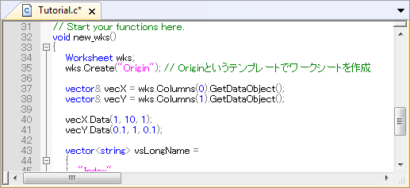
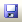

Origin Cとコードビルダの紹介
OC-CodeBuilder
サマリー
Origin
Cは、ほぼ完全にANCI準拠のC言語の構文をサポートしており、内部クラスとDLL拡張クラスを含むC++のサブセットもサポートしています。さらに、Origin
Cは、Originを認識しています。これは、ワークシートやグラフなどのOriginオブジェクトがOrigin Cにマッピングされているということです。これによりOrigin
CでOriginのオブジェクトやプロパティを直接操作できます。
Origin Cの統合開発環境 (IDE)をコードビルダといいます。コードビルダは、Origin Cのプログラムを記述したり、コンパイルしたり、デバッグするための標準ツールを提供します。Origin
C関数をコンパイルすれば、その関数をOriginやコードビルダワークスペースのさまざまな場所から呼び出すことができます。
コードビルダを開くには、Originの標準ツールバーの  ボタンをクリックするか、キーボードのALT+4キーを押します。
ボタンをクリックするか、キーボードのALT+4キーを押します。
必要なOriginのバージョン:Origin 9以降
学習する項目
このチュートリアルでは、以下の項目について説明します。
- Origin C関数を作成する
- 関数をデバッグし実行する
- カスタムルーチンボタンを使用して関数を実行する
ステップ
Origin C関数を作成する
- コードビルダを開き、新しいワークスペースを作成します（メニューのファイル：新規ワークスペース）。コードビルダの標準ツールバーで新規ボタン
 をクリックして新規ファイルダイアログを開きます。
をクリックして新規ファイルダイアログを開きます。
- .cファイルを作成するために、C Fileを選択します。ファイル名テキストボックスにTutorialと入力します。場所テキストボックスで、User
File Folder/OriginCサブフォルダを選択します。ワークスペースに追加チェックが付いていることを確認してください。OKをクリックします。Tutorial.cというファイルがコードビルダワークスペースに開きます。
- 
- // start your functions hereという行の下に次のように入力します。
void new_wks()
{
Worksheet wks;
wks.Create("Origin"); // create a Worksheet window with template - Origin
vector& vecX = wks.Columns(0).GetDataObject();
vector& vecY = wks.Columns(1).GetDataObject();
vecX.Data(1, 10, 1);
vecY.Data(0.1, 1, 0.1);
vector<string> vsLongName =
{
"Index",
"Data"
};
for (int nCol = 0; nCol < wks.GetNumCols(); ++nCol)
{
Column col (wks, nCol);
col.SetLongName(vsLongName[nCol]);
}
}
このnew_wks関数は、Originテンプレートを使用したワークシートを作成します。増分1の1から10までのデータを1列目に入力し、増分0.1の0.1から1までのデータを1列目に入力します。これら2列のロングネームをIndex、Dataとします。
- 保存ボタンをクリックします。
Origin2015では、いくつかの便利なツールが使用できます。
- クイックオープンファイル
- SHIFT + ALT + Oキーを押すか、ツール:クイックオープンファイルを選択してクイックオープンファイルダイアログを開きます。
- .h と .c/.cpp ファイルをスイッチ
- キーボードのCTRL + ALT + O キーを押して関連するヘッダファイル（.hファイル）を開きます。
- シンボルを検索
- SHIFT + ALT + Oキーを押すか、ツール:シンボルを表示 を選択してシンボルを検索
ダイアログを開きます。
|
関数をデバッグし実行する
- コードビルダの標準ツールバーで、ビルドボタン
 をクリックします。これにより、new_wks関数がコンパイルされ、リンクが実行されます（Tutorial.c
ファイルがアクティブであることを確認してください）。
をクリックします。これにより、new_wks関数がコンパイルされ、リンクが実行されます（Tutorial.c
ファイルがアクティブであることを確認してください）。
- 34、35、37、50行の前の灰色の領域をクリックすると、赤い丸のアイコンが追加され、対応する行にブレークポイントが追加されたことを示します。すべてのブレークポイントの情報は、ブレークポイントウィンドウにリストされます。
- ブレークポイントウィンドウで、tutorial.c,
line 35のチェックを外し、このブレークポイントを無効にします。この操作により35行目のブレークポイントアイコンは、白抜きの表示になります。
 |
ブレークポイントを削除するには、対応する行についているブレークポイントアイコンをクリックします。または、ブレークポイントウィンドウで右クリックし、ブレークポイントを削除を選択します。 |
- 37行のブレークポイント上で右クリックし、ヒットした時...を選択してダイアログを開きます。メッセージを表示にチェックを付けます。メッセージを表示の下にあるテキストボックスに、test
code run to here. と入力します。.OKボタンをクリックして終了します。この操作により、ブレークポイントがひし形になりました。
- 50行のブレークポイント上で右クリックし、条件...を選択してダイアログを開きます。条件を有効にし、テキストボックスに、nCol==1
と入力します。OKをクリックします。
- このコードを実行するには、LabTalkコンソールウィンドウの上パネルに関数名new_wksを入力します。
- ENTERキーを押します。最初のブレークポイントアイコンに黄色い矢印が表示され、コードのうちどの行まで実行されたか示します。
- F8を押し、コードのデバッグを続けます。50行目に矢印のアイコンが移動します。
- コマンド・結果ウィンドウの下部パネルに、37のブレークポイントに追加したメッセージが表示されます。
- 変数ウィンドウを開きます。1列目に変数名がリストされ、2列目にそれらの値がリストされます。nColの値を確認します。
- 黄色の矢印アイコンが表示されなくなるまで、F5キーを押し続けます。
- Originワークスペースに戻ります。ワークブックが以下の画像のように作成されます。
カスタムルーチンボタンを使用して関数を実行する
- CTRL + SHIFTキーを押しながら、カスタムルーチンボタン
 をクリックします。これにより、コードビルダにCustom.ogsファイルが開きます。
をクリックします。これにより、コードビルダにCustom.ogsファイルが開きます。
- 11行目にカーソルを合わせ、コメントボタン
 をクリックし、11行目をコメントアウトします。
をクリックし、11行目をコメントアウトします。
- 12行目と13行目に以下のコードを入力します。
Run.LoadOC(%YOriginC\Tutorial.c); // %Y はユーザファイルフォルダ
new_wks();
このコードにより、前のセクションで追加したTutorial.cファイルがロードされ、new_wks()
関数を実行します。
- 保存ボタンをクリックします。
- Originワークスペースに戻ります。カスタムルーチンボタンをクリックします。前のセクションのように、データが入力されたワークシートが作成されます。